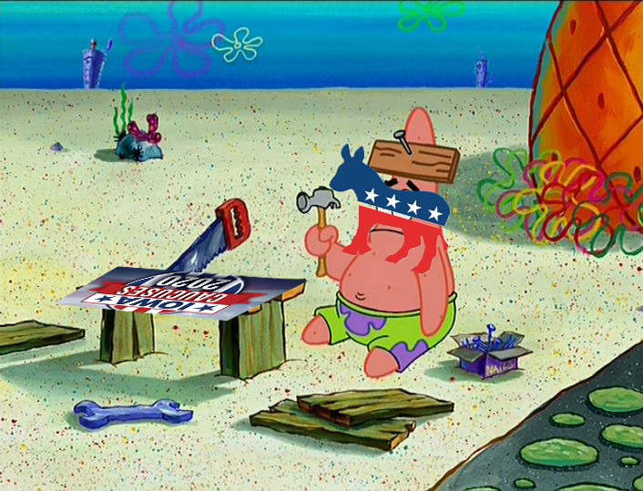

The virus continues to spread heavily in Wuhan and throughout China. Even with measures to contain it there is nothing that is stopping it now. Wuhan falls and their hospitals are filled to the top with no climb even beginning to slow.
During this time in the United States the campaign for the 2020 election rages on for anyone trying to defeat Donald Trump. In Iowa, where the democrats and communist party were having the Iowa Caucus, there was a disaster. They hired someone of the likes of an Arthur to code a mobile app for counting votes for the Caucus. The app falls apart and the democrats alongside the one commnist put themselves down entirely.
